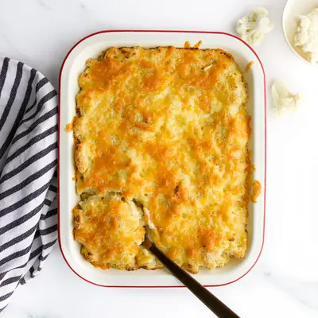

Cauliflower Mac and Cheese

Ingredients
- 1 Small Cauliflower (550g (1.2lb)once trimmed and cut into florets)
- 265g (2 cups/ 9.3 oz) Macaroni Pasta
- 28g (2 tbsp) Butter
- 9g (1 tbsp) Flour
- 250ml (1 cup) Milk
- 1 tsp Dijon Mustard
- 145g (1 ¼ cup) Extra Mature Cheddar Cheese
- 25g (¼ cup) Panko Breadcrumbs
Steps
- Preheat oven to 200c/400f.
- Remove the base and outer leaves from the cauliflower, break into florets and wash.
- Place the florets into a pan of boiling water and boil for approx. 8 mins, until soft.
- Drain the cauliflower and blend in a blender / food processor.
- Cook the macaroni pasta in a saucepan of boiling water, as per pack instructions.
- Meanwhile, make your sauce.Melt butter in a saucepan and add the flour to form a roux, stir continuously for about 2 minutes.Add milk a little at a time, keep stirring/whisking continuously between each pour. Stir out any lumps before adding more milk. Continue adding the milk little by little until all the milk is incorporated and the sauce is thick and glossy.
- Take off the heat and stir in the mustard and one cup (115g) of the cheese (reserving the rest for the topping.)
- Add the cauliflower puree to the sauce and stir to combine. If the sauce seems too thick add a little more milk.
- Add the sauce to the drained pasta and mix well. Transfer to one large baking dish (or several small dishes) Sprinkle with the remaining cheese and panko breadcrumbs.
- Bake in the oven, for approx. 20 mins, until the top is golden and bubbly.
Recipe by Healthy Little Foodies, from Healthy Little Foodies. Saved here for personal use; the original has the full notes, tips and photos. Open original